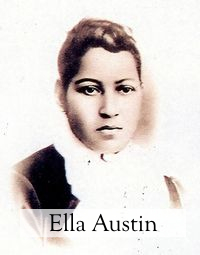

Public Figures
Artemesia Bowden

Civil rights activist and the original founder of St. Phillip's college.
Charles Bellinger

Well known businessman and political leader. Influenced political activism within the black community which led to greater development on the East Side of San Antonio.
Ella Austin
Philanthropist who operated an orphanage for black children. The orphanage is now the Ella Austin Community center.
Dolores Linton

Educator and advocate for equal education opportunites. Opened a one-room schoolhouse for black pupils in the community of West San Antonio Heights, 1931.
Percy Sutton

Political leader and businessman. Freedom rider and legal representative to Malcolm X.
Black Heritage San Antonio values and protects the legacies of prominent community leaders and activists from days gone by. There were many individuals who paved the way for African Americans in San Antonio. Business owners, politicians, educators, doctors, atheletes; each left their mark in history and attributed to current standards of living for the African American community. While many of their stories have been left untouched in the archives, we are allowing their voices to be heard once again. These individuals deserve reverence for their contributions.